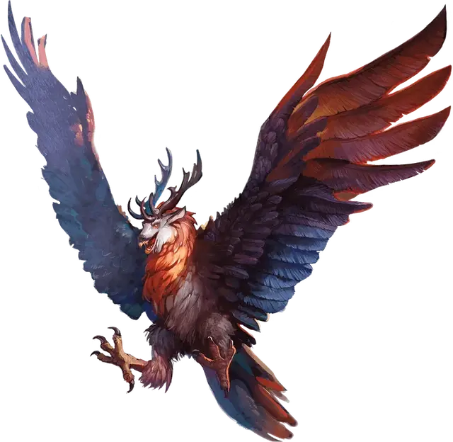

Перитон
Peryton
Средний Монстр, хаотично-злой

Класс Доспеха 13 (природный доспех)
Хиты 33 (6к8 + 6)
Скорость 20 футов, летая 60 футов
| мод | спас | ||
|---|---|---|---|
| СИЛ | 16 | +3 | +3 |
| ЛОВ | 12 | +1 | +1 |
| ТЕЛ | 13 | +1 | +1 |
| мод | спас | ||
|---|---|---|---|
| ИНТ | 9 | −1 | −1 |
| МДР | 12 | +1 | +1 |
| ХАР | 10 | +0 | +0 |
Навыки Восприятие +5
Сопротивление урону дробящий, колющий, рубящий от немагических атак
Чувства пассивное Восприятие 15
Языки понимает Общий и Эльфийский, но не говорит
Опасность 2 (450 опыта)
Бонус мастерства +2
Среда обитания Горы, Холмы
Особенности
Пикирующая атака. Если перитон летит и пикирует как минимум на 30 футов по прямой к цели, а затем попадает по ней рукопашной атакой оружием, атака причиняет цели дополнительный урон 9 (2к8).
Облет. Перитон не провоцирует атаки, когда вылетает из досягаемости врага.
Острое зрение и тонкий нюх. Перитон совершает с преимуществом проверки Мудрости (Восприятие), полагающиеся на зрение или обоняние.
Действия
Мультиатака. Перитон совершает одну атаку боданием, и одну атаку когтем.
Бодание. Рукопашная атака оружием: +5 к попаданию, досягаемость 5 футов, одна цель. Попадание: Колющий урон 7 (1к8 + 3).
Когти. Рукопашная атака оружием: +5 к попаданию, досягаемость 5 футов, одна цель. Попадание: Колющий урон 8 (2к4 + 3).
Описание
Хотя это плотоядное чудовище может питаться любыми существами, оно предпочитает гуманоидов, особенно эльфов, полуэльфов и людей. Когда перитон убивает гуманоида, он вырывает сердце у своей жертвы и относит его в гнездо для поедания.
Перитон — это причудливое существо, представляющее собою смесь крыльев и тела хищной птицы с головой оленя. Странной особенностью является тень существа: она не соответствует физическому облику его тела, но выглядит как гуманоид. Мудрецы утверждают, что первыми перитонами были люди, измененные не то отвратительным проклятьем, не то магическим экспериментом. Но барды повествуют о другой истории, о мужчине, неверность которого вынудила его жену вырезать сердце у более красивой и молодой соперницы и пожрать его в ритуале, призванном вернуть расположение мужа навсегда. Ритуал удался, но только до тех пор, пока злодеяние женщины не было раскрыто. Она была повешена за свое преступление, но магия, сохранившаяся от нечистого ритуала, превратила падальщиков, слетевшихся на её труп, в первых перитонов.
Неестественный голод. Репродуктивный цикл перитона зависит от сердца недавно убитого гуманоида. Орган должен быть поглощен самкой перитона, и только после этого она сможет размножаться. Когда сердце поглощено, тень перитона на время изменится, отобразив настоящее чудовищное тело.
При нападении на гуманоида перитон целеустремлен и безжалостен, он будет атаковать до тех пор, пока не погибнет сам или его жертва. Если перитон каким-либо способом отогнан, он будет следить за жертвой издалека, атакуя при появившейся возможности.
Проклятье гор. Перитоны устраивают насесты на вершинах горных хребтов и логова в высокорасположенных пещерах. Они охотятся на существ, живущих и блуждающих в долинах у подножия гор, а путешественникам на одиноких горных тропах нужно научиться посматривать на небеса. Так как обычное оружие не действенно против перитонов, горные народы предпочитают любыми способами избегать с ними встречи.
Поселения привлекательны для перитонов как возобновляемый источник пищи. Это вынуждает советы поселений или местную знать нанимать искателей приключений для устранения гнездовий перитонов.